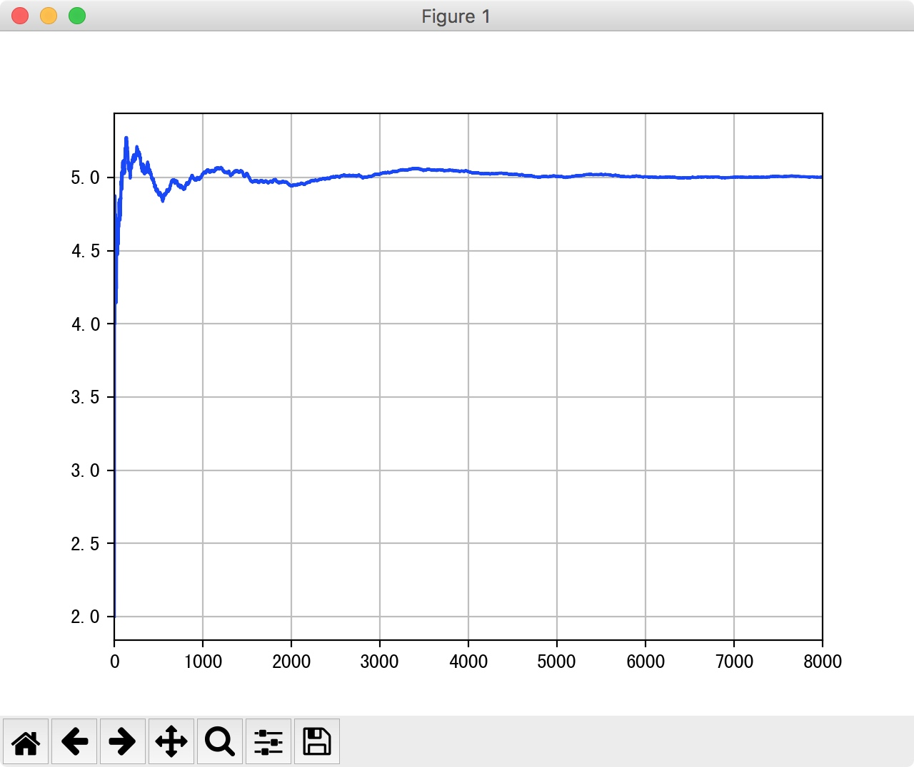
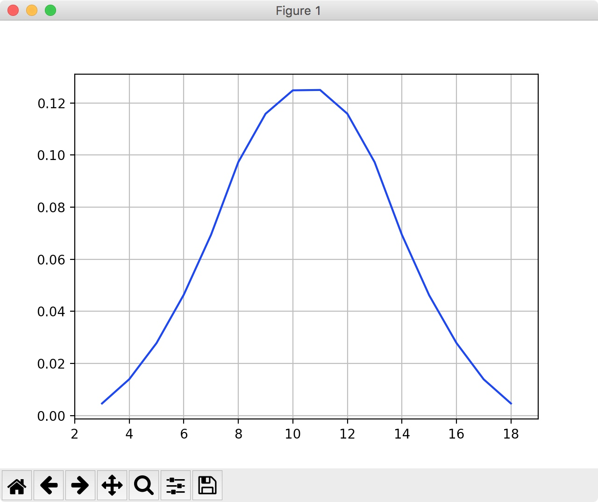

大数定理
概念阐述
大数定律的意义:随着样本容量n的增加,样本平均数将接近于总体平均数(期望\(\mu\)),所以在统计推断中,一般都会使用样本平均数估计总体平均数的值.
也就是我们会使用一部分样本的平均值来代替整体样本的期望/均值,出现偏差的可能性是存在的,但是当n足够大的时候,偏差的可能性是非常小的,当n无限大的时候,这种可能性的概率基本为0.
大数定律的主要作用就是为使用频率来估计概率提供了理论支持;为使用部分数据来近似的模拟构建全部数据的特征提供了理论支持.
代码实验
# -*- coding: utf-8 -*-
'''
Created by hushiwei on 2018/4/1.
desc: 大数定理展示理解
'''
import random
import numpy as np
import matplotlib as mpl
import matplotlib.pyplot as plt
# 解决中文显示问题
mpl.rcParams['font.sans-serif']=['SimHei']
mpl.rcParams['axes.unicode_minus']=False
random.seed(28)
def generate_random_int(n):
'''
产生n个1-9的随机数
:param n:
:return:
'''
return [random.randint(1,9) for i in range(n)]
if __name__ == '__main__':
number=8000
x=[i for i in range(number+1) if i!=0]
# 产生number个[1,9]的随机数
total_random_int=generate_random_int(number)
# 求n个[1,9]的随机数的均值,n=1,2,3,4,5...
# 求这number个数的均值,比如1个元素的均值,2个元素的均值,3个元素的均值,4个元素的均值,一直到最后
y=[np.mean(total_random_int[0:i+1]) for i in range(number)]
plt.plot(x,y,'b-')
plt.xlim(0,number)
plt.grid(True)
plt.show()
可视化展示原理

中心极限定理
概念阐述
中心极限定理(Central Limit Theorem).假设\({X_n}\)为独立同分布的随机变量序列,并具有相同的期望\(\mu\)和方差为\(\sigma^2\),则\({X_n}\)服从中心极限定理,且\(Z_n\)为随机序列\({X_n}\)的规范和.
\[
\begin{aligned}
Y_n & =X_1+X_2+ \cdots +X_n \\\
& = \sum_{i=1}^nX_i \to N(n\mu,n\sigma^2)
\end{aligned}
\]
\[Z_n=\dfrac{Y_n-E(Y_n)}{\sqrt{D(Y_n)}}=\dfrac{Y_n-n\mu }{\sqrt{n}{\sigma}} \to N(0,1)\]
中心极限定理就是一般在同分布的情况下,抽样样本值的规范和在总体数量趋于无穷时的极限分布近似于正态分布.
代码实验
# -*- coding: utf-8 -*-
'''
Created by hushiwei on 2018/4/1.
desc :中心极限定理
随机的抛六面的骰子,计算三次的点数的和,三次点数的和其实就是一个事件A
问题: 事件A的发生属于什么分布呢?
分析: A=x1+x2+x3,其中x1,x2,x3是分别三次抛骰子的点数
根据中心极限定理,由于x1,x2,x3属于独立同分布的,因此最终的事件A属于高斯分布
'''
import random
import numpy as np
import pandas as pd
import matplotlib.pyplot as plt
def generate_random_int():
'''
随机产生一个[1,6]的数字,模拟随机抛六面骰子的结果
:return:
'''
return random.randint(1,6)
def generate_sum(n):
'''
计算返回n次抛六面骰子的和结果
也既是模拟A事件
:param n:
:return:
'''
return np.sum([generate_random_int() for i in range(n)])
if __name__ == '__main__':
# 进行A事件多少次
number1=10000000
# 表示每次A事件抛几次骰子
number2=3
# 进行number1次事件A的操作,每次事件A都进行number2次抛骰子
keys=[generate_sum(number2) for i in range(number1)]
# 统计每个和数字出现的次数,eg:和为3的出现多少次,和为10出现多少次...
result={}
for key in keys:
count=1
if key in result:
count+=result[key]
result[key]=count
# 获取x和y
x=sorted(np.unique(list(result.keys())))
y=[]
for key in x:
# 将出现的次数进行一个百分比的计算
y.append(result[key]/number1)
# 画图,可视化展示
plt.plot(x,y,'b-')
plt.xlim(x[0]-1,x[-1]+1)
plt.grid(True)
plt.show()
可视化展示原理
